← 角色重绘 · 全动作对照水猴傀儡 · 已接入运行工程
2026-11-04 · F21新增1只 · 采用已确认V2动作与规则
本次生效
- 等级3，本体22，背炮独立10耐久；攻击前可选本体或背炮，破坏后停用水炮。
- 近身跑动掌击，远程粗水束与命中水花；完整／破损状态均保留，受伤沿用士兵闪烁和命中音。
- 水炮命中速度－1，不叠加；机械傀儡经验×1.5。同阵营仅剩机械傀儡时移动＋3并向最近合法边缘撤离。
- 逃走不计击杀或击败经验；保留F21原胜利目标。旧的进行中F21保留原编成，重新部署／重试使用新增水猴的10人编成。
- 删除20项被否决且无当前动作引用的文件，重建图集；生成器不再产出旧帧。
以下17张图片来自实际Godot主场景的后台离屏视口，使用受控站位、数值及选帧；文字安全区检查通过。未进行整关自然实战平衡验收或手机安装。
F21实际部署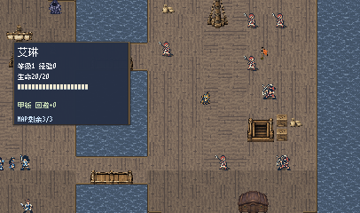
完整状态与数值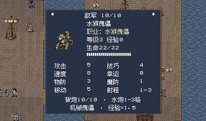
攻击前选择本体或背炮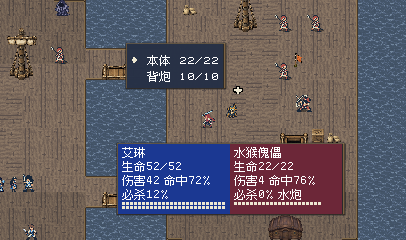
背炮独立耐久与伤害预览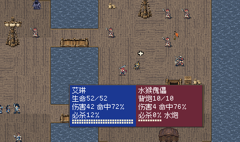
破炮后水炮停用水炮飞行水束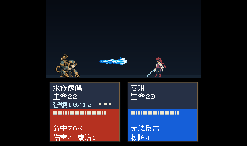
水炮命中水花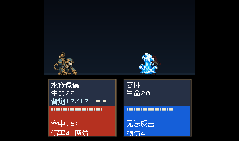
完整 · 跑近目标完整 · 第83帧掌击命中完整 · 跑回原位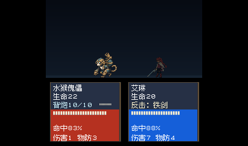
完整 · 固定姿势闪烁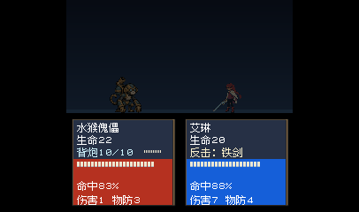
破损 · 跑近目标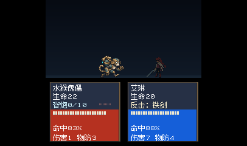
破损 · 第83帧掌击命中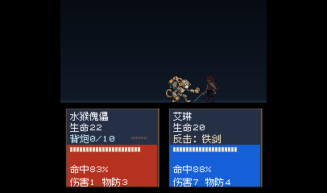
破损 · 跑回原位破损 · 固定姿势闪烁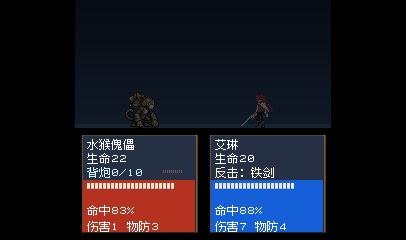
撤离移动8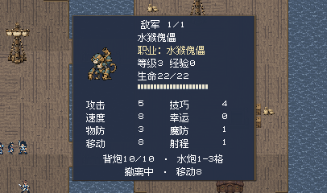
256逻辑宽度状态面板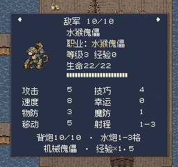